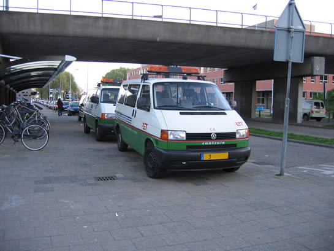

AHOB M.L. Kingweg in storing en ander divers metronieuws...
- woensdag 10 december 2008 15:51
- Geschreven door Joachim
Gisteravond omstreeks 18.20 ging de AHOB-installatie van de Martin Luther Kingweg in Ommoord in storingstoestand. Hierdoor bleven alle bomen gesloten, ook de bomen voor het autoverkeer. Er ontstond een redelijke file. De auto's konden al zigzaggend via het fietspad omrijden, de bussen van Connexxion en RET echter niet... Hiervoor werden de bomen opengeduwd, zodat de busdiensten geen vertraging opliepen.
De toegesnelde Smart-Ploeg van metrobeheer(ploeg Capelsebrug) was rond 18.50 ter plaatse en hielp mee het verkeer om te leiden. Rond 19.00 waren RET en Siemens aangekomen om de kruising te resetten en de oorzaak van de storing te bekijken. Het betrof een lusstoring, deze was zodanig afgekoeld(het was niet meer zo warm 's avonds) dat de lus op een verkeerde frequentie ging draaien. Hierop ging de AHOB-installatie in de sluiting.
Nadat enkele lussen weer met een goede frequentie waren afgesteld, was de storing ook echt voorbij. Tegen 20.15 konden RET en Siemens weer huiswaarts.
Volgens een van de voorbijgangers ging het "duidelijk om een blikje op de sensor". Nee: de tijd van negenogen en AKI's hebben we bijna gehad en was écht niet van toepassing op de M.L. Kingweg.
Hieronder enkele foto's:
Waar waren we zonder de Smartploeg? Inderdaad! Helemaal nergens. Het verkeer wordt hier op professionele wijze omgeleid. Het ging ook deze keer weer helemaal goed. Oké op de gefrustreerde vrachtwagenchauffeur na: "Doet die boom maar gewoon open voor me!".
Ja, de bus moest even wachten. Het zou nu niet lang meer duren voordat de AHOB-installatie gereset zou worden.
RET en Siemens gaan de lussen opnieuw afstellen. Hierdoor moesten de bomen ook tijdelijk weer gesloten blijven.
Controle-actie station Alexander
Op station Alexander werd gisteravond een grote controle-actie gehouden. RET Controle werkte samen met de politie van district Oost. Ook de NS hield op het perron ingangscontrole. Diverse personen hadden geen plaatsbewijs en kregen ter plekke een bekeuring.
In afwachting van de volgende metro... Rechts staat een agent een boete uit te schrijven.

Station De Akkers
Door een defect metrostel op of nabij station de Akkers liep het metroverkeer vrijdagavond grote hinder op. De metro's reden zeer onregelmatig. Het kwam voor dat er soms 17 tot 20 minuten geen metro verscheen. Rond 21.00 reed bijna alles weer volgens de dienstregeling.